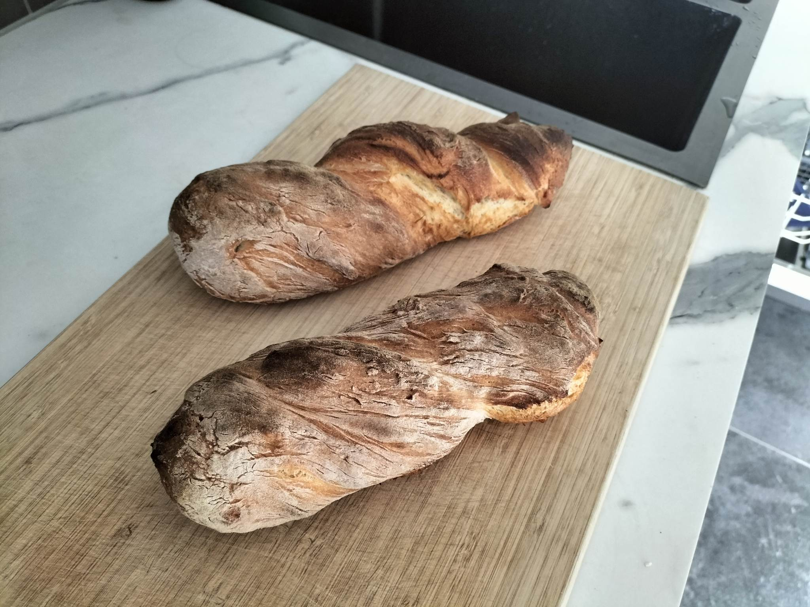

Baguette

What this?
This baguette recipe is super quick, taking a total of 2 hours. Originally made on 22/5/2023.
Recipe is from this instagram post.
Ingredients
- 300 ml lukewarm water
- 3g instant yeast (half a packet)
- pinch of sugar
- 380g flour
- 1 tsp salt
Method
- Whisk water, yeast and sugar.
- Add flour and salt. Knead together till it forms a sticky dough.
- Cover with a tea towel and rest for 90 minutes.
- Generously flour working surface. Divide dough in 2.
- Shape/twist into baguette a shape and place on a lined baking tray.
- Bake at 250oC for 20-25 minutes.
My Review
Really simple and easy to make. The baguette itself is a little bland, but perfect to use as a vehicle for dips.
Next time I should shape the baguettes longer, at the moment they are a little chodey!
I think I put it in for the full 25 minutes, and they browned more than I would've liked. NOTE bake for 20 minutes next time and check from there.
Back to home